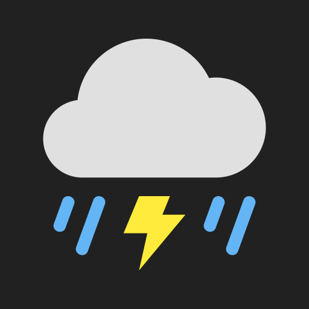

Secure Pass v1.0.2
Offline password manager with encrypted vault storage and biometric unlock.
Android apps by Saurabh Kundu, distributed through an F-Droid-compatible repository.
Add the repository to Droid-ify, F-Droid, or another compatible client to browse and receive updates.
Offline password manager with encrypted vault storage and biometric unlock.

Save cities around the world and see their local time, including from a home-screen widget.
Opt-in cellular signal logging and approximate-area comparisons through a server you choose.
Signal Atlas server: no shared backend is hosted by default. To compare readings across devices, deploy your own server and configure its HTTPS URL in the app.
Repository URL: https://saurabhkundu1.github.io/Applify/repo
Signing certificate fingerprint (SHA-256):DE 62 E0 D3 86 DB 9B 6F C6 16 AD F6 57 3F 45 8A AC 8D 04 F8 73 00 7C 73 B8 58 5F BE F0 96 02 55
If apps do not appear in Droid-ify, open the Applify repository settings and refresh it. Confirm the repository URL above and the fingerprint before removing and re-adding it.